WorldFirst · China Sourcing Trip, Tour 1 · plan v2
They Believe Their Eyes: storyboard
The question cut, step by step. Each step says what happens, what you hear, what you see and what is on screen, with a strip of real frames from the crew's contact sheets. Under each frame: clip id, grade, best in and out. Dashed red tiles are things still to build or record. Everything else was captured on the trip and is in the logs.
Steven Chen · 18 Oct 2026 · About 7 minutes 30 · 795 logged clips, six recorded voiceovers · Companion to index.html (the plan and script)
01
Open
01
Picture only
25 s
No voice. The scale of the place before anyone explains it. Sound design and a low bed; cut on the beat.
You hear
Nothing. Machines, a crowd, a bell on the title.
You see
Royalstar tower at dusk, the kettle lines, the robot press, a container loading, the fair crowd surging through the gates, two robots boxing, the pink aisle.
On screen
At 0:12, one line: Guangdong. October 2026.
Storyboard
Royalstar towerDJI_20261013135848_0030_D · A · 0:01-0:08
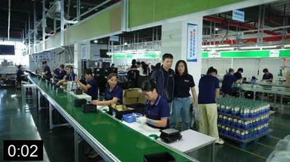
Kettle linesB034C054_261013WP · A · 0:00-0:05
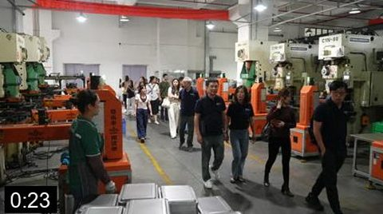
Robot pressB034C136_261013KN · A · 0:18-0:28
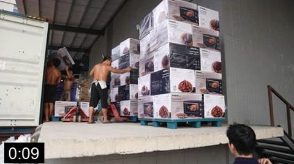
Container for Saudi ArabiaB034C146_261013YF · A · 0:04-0:13Fair gatesC6919 · A · 0:08-0:29Robots boxingC6892 · A · 0:03-0:51
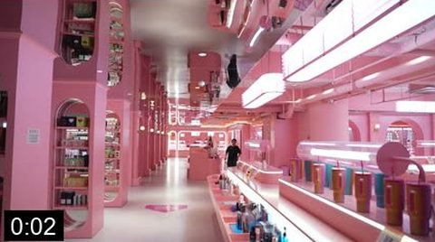
The pink aisleB035C159_261014DZ · A · 0:00-0:04
Text: Guangdong. October 2026.
Footage
ConfirmedAll A-grade: the tower DJI_0030, lines B034C054, press C136, container C146, fair gates C6919 and the boxing ring C6892, the pink aisle B035C159.
Hard cut from picture to a face. Han says the thesis before the viewer knows who he is. Joshua places us on the bus. The question is asked once.
You hear
Han: 'You can do the desktop research, you can look online, but until you're here you're not really realising the scale of things.' Joshua: 'Behind me on this bus are 14 importers from various countries such as Australia, Singapore, Thailand, Korea and more.'
To record · VO0, 8 sVO0, to record: 'Fourteen business owners. Five factories. Three days. One question: is it worth the flight?' Fallback: the same words as a text card.
You see
Han on the stage, Joshua beside the coach, then the coach pulling away.
On screen
Title: They Believe Their Eyes. Under it: A WorldFirst China Sourcing Trip.
Storyboard
Han: 'until you're here'C8188 · A · 6:19-9:53Joshua by the coachB033C021_261012OO · A · 0:00-0:13Delegates boardB033C029_261012IW · B · 0:16-0:23
VO0 · to record (text-card fallback)
Title card · to build
Footage
ConfirmedHan C8188 is A (flat log, needs grade). Joshua B033C021 is A, beside the parked coach. Delegates boarding B033C029 is B. VO0 is not recorded; the text-card fallback needs nothing.
C8188 · B033C021 · B033C029 · VO0 (to record)
02
What they expected
03
Who is on the bus
50 s
Four introductions cut to the doubt in each, not the biography. Harold is set up as the veteran so his verdict lands in Chapter 3.
You hear
Harold: 'They started the business when Kmart had two stores in Sydney... we come here quite often.' The ex-lawyer: '14 years as a lawyer, now e-commerce. I'm here to explore.' Charles Park's wife: 'First time in China. I want to know how to source.' Miley: 'I just landed yesterday... the taxi drove me to another hotel. I got lost.' Doris: 'You are the ones who finally made it.'
You see
Each speaker on the handheld mic, the bus listening, the whole coach waving.
On screen
Chapter card: What they expected. Lower thirds: first name, company, country.
Storyboard
Boarding at the hotelB033C026_261012NS · B · 0:00-0:09HaroldB033C037_261012WH · A · 0:05-0:30The ex-lawyerB033C046_261012EO · B · 0:07-0:37Charles Park and wifeB033C038_261012GA · B · 0:04-0:40MileyB033C042_261012HR · B · 0:39-1:12
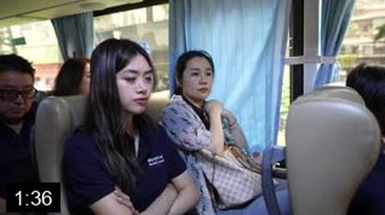
Doris on the PAB033C034_261012IX · B · 1:19-1:53
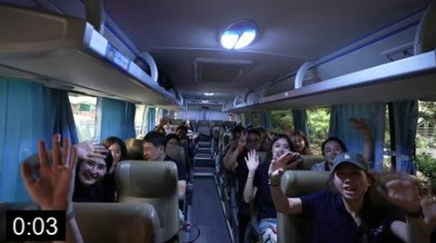
The whole coach wavesB033C032_261012ES · A · 0:01-0:06
Footage
ConfirmedHarold B033C037 A (0:05 to 0:30). The others B with blown windows (C046, C038, C042). Doris C034 B (1:19 to 1:53). Coach wave C032 A.
Joshua's roadmap, trimmed to the route and one admission. Then his first unguarded line of the trip.
You hear
Joshua at lunch: 'This is just like jumping into the deep end. Coming to the sourcing tour and seeing the factory and getting to talk to everyone, it's really crazy.'
VO1 trimmed: 'Fourteen importers from Australia, New Zealand, Singapore, Thailand and Korea. Five factories in three days, then the Canton Fair. Foshan first, then Zhongshan, then back into Guangzhou... I had never seen where any of it gets made.'
You see
Joshua at the lunch table.
To build · animated mapAnimated map, three pins. Then the Viomi gate.
On screen
Map labels only.
Storyboard
Animated map · to build
Viomi gateB033C123_261012HT · A · 0:01-0:07
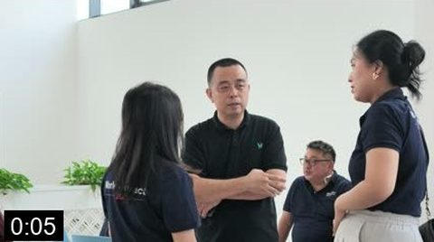
Joshua: 'the deep end'DJI_20261012125639_0010_D · B · 0:00-0:12
Footage
PartlyVO1 is recorded (two takes, one stumble each, assemble). Joshua at lunch DJI_0010 is B. The map is to build. Viomi gate B033C123 A.
VO1 · B033C123 · DJI_0010
03
What they saw
05
Test 1: scale
45 s
Three numbers, said by the people who own them, mostly under picture. Han's stage line closes it.
You hear
Viomi guide: '5 million water purifiers and 30 million filter cartridges a year, the whole supply chain in one building.' Weijin guide: 'About 20 containers a day. These are being shipped to Saudi Arabia.' Rongde: nine lines, 2,000 kettles per line per day. Han: 'It is insane, the scale of everything.'
You see
The time tunnel, the Gigafactory floor, the loading bay, the pressing robots, the kettle lines, the oven assembly, the production dashboard.
On screen
Chapter card: What they saw. Three stat cards, one per number.
Storyboard
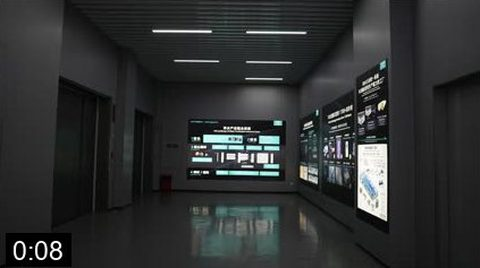
The time tunnelB033C118_261012ZP · A · 0:01-0:15
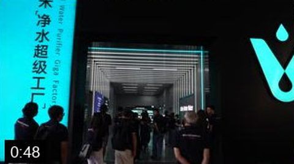
Into the GigafactoryB033C113_261012RV · A · 0:33-0:56Loading the containerB034C146_261013YF · A · 0:04-0:13Pressing lineB034C136_261013KN · A · 0:18-0:28Assembly lineB034C054_261013WP · A · 0:00-0:05
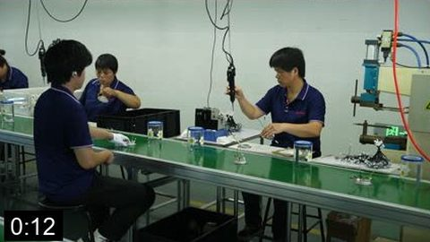
Workers on the lineB034C068_261013XL · A · 0:07-0:16
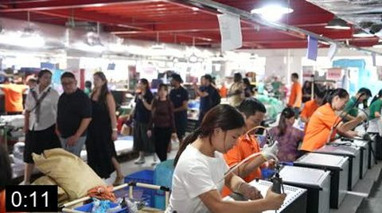
Oven assemblyB034C159_261013MC · A · 0:05-0:15
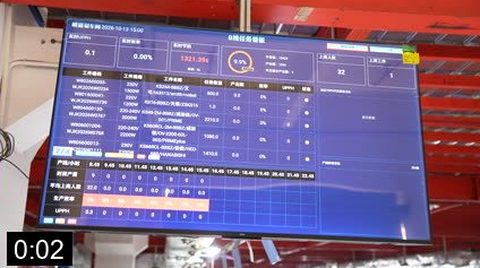
Production dashboardB034C164_261013UC · B · 0:00-0:05
Footage
PartlyPicture is all A. Two of the three numbers were said on cameras not in the log (DJI_12 nine lines, DJI_23 containers): carry them as stat cards or subtitles over the logged picture. Han C8188 A.
The questions you can only ask in the room, each with its answer. Ends on John's inversion: price is not the thing to choose on.
You hear
Australian distributor: 'For the warranty part and the certification part, what's the cost of this?' Jeff: 'Two years warranty offline, one year online.' The ex-lawyer: 'The regulatory framework is tricky, especially when it comes to kids.' Rongde lab: 'Some products over one year... 24 hours, all day, it is all work.' John: 'We buy some cheap lunch box, under 40 dollars. We know the cost. Why can they sell so cheap? The PP they use is not fire resistant. Quality is what matters.'
You see
The Viomi Q&A room, both halves of each exchange, the lab rigs and the 24-hour kettle test, John across the table from Joshua.
On screen
Lower thirds. No stat cards.
Storyboard
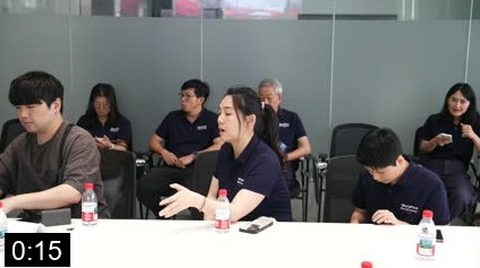
Warranty questionB033C138_261012NJ · B · 0:06-0:28
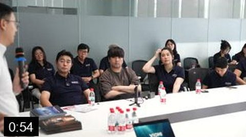
Jeff answersB033C141_261012GH · B · 0:44-1:14Certification questionB033C152_261012LZ · B · 0:00-0:12
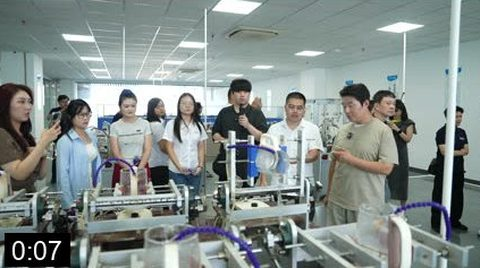
Robot test rigsB034C118_261013RF · A · 0:01-0:11
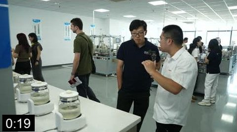
24-hour kettle testB034C119_261013FF · A · 0:03-0:29
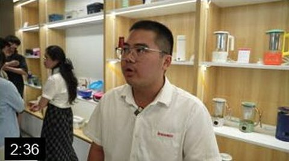
John: 'quality is what matters'B034C108_261013BS · A · 2:13-2:59
Footage
ConfirmedWarranty C138 and C141 B, certification C152 B, lab rigs C118 A, 24-hour test C119 A, John C108 A ('quality is what matters' 2:13 to 2:59).
How they want to be paid, said by two suppliers and one client. WorldFirst enters through their mouths, not ours.
You hear
John: 'Usually we use TT, 30 per cent. After we give you the product, you give the remaining money.' Lincoln: '30 per cent deposit, and before shipment we collect the balance.' The Korean client, in Chinese: 'I already use WorldFirst. From Korea to the Chinese factory, convenient and fast, and the exchange rate is excellent.' Joshua: 'Do you use WorldFirst yourself?' Miley: 'Yes.'
You see
John and Lincoln in their showrooms, the Korean client in his bus seat, Miley at lunch.
On screen
Subtitles for the Chinese. Lower thirds.
Storyboard
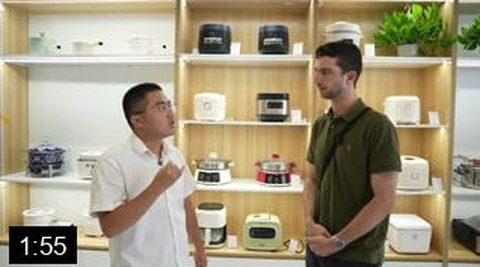
John: TT 30 per centB034C107_261013ZH · A · 0:49-3:01Lincoln: 30 per cent depositB034C206_261013GN · A · 0:33-0:59Korean client, subtitledDJI_20261013092114_0024_D · A · 1:05-1:44
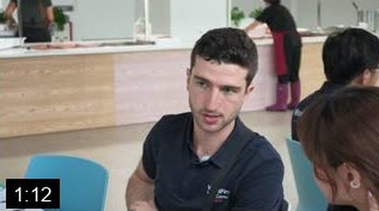
Miley: 'Yes.'DJI_20261012124845_0009_D · B · 0:43-1:12
Footage
ConfirmedJohn C107 A (2:34), Lincoln C206 A (0:33 to 0:59), Korean client DJI_0024 A (1:05 to 1:44, Chinese), Miley's 'yes' inside DJI_0009 B (7:40 long, find it).
B034C107 · B034C206 · DJI_0024 · DJI_0009
08
Joshua's bridge
16 s
VO3, minus its last sentence. The money chapter in one breath.
You hear
Recorded · VO3 3:22 to 3:38VO3: 'Three factories, one day. The thing I kept hearing was the same at every gate: talk first, then come and see us. Thirty per cent up front, the rest before it ships.'
You see
The Weijin group photo, the coach at dusk, the city through the window.
On screen
None.
Storyboard
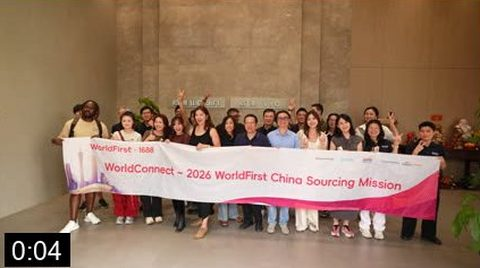
Weijin group photoB034C204_261013YP · A · 0:01-0:07Back to the coachB035C051_261013WN · B · 0:06-0:20Evening roadDJI_20261012165116_0020_D · B · 0:14-0:30
Footage
ConfirmedVO3 clean. Group photo C204 A, coach B035C051 B, evening road DJI_0020 B.
VO3 · B034C204 · B035C051 · DJI_0020
09
The thing you cannot do on a video call
40 s
John's line, then the proof: phones out, WeChats swapped, a table laughing. Lincoln closes the chapter.
You hear
John: 'They will come to see. They believe their eyes.' 'You sit down here and you talk, just like old friends.' Joshua on the bus: 'Last night at the dinner, people were swapping WeChats like crazy.' Lincoln: 'For them to come here in person and see with their own eyes the production, and build that relationship.'
You see
John with Joshua, the WeChat swap at Rongde, the phone across the dim sum table, the selfie, the group photo at the Viomi gate, Lincoln.
On screen
None. Let it breathe.
Storyboard
John: 'they believe their eyes'B034C107_261013ZH · A · 0:49-3:01
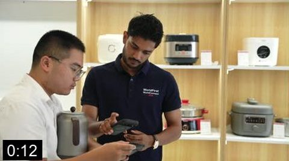
Swapping WeChatB034C089_261013WY · A · 0:02-0:19
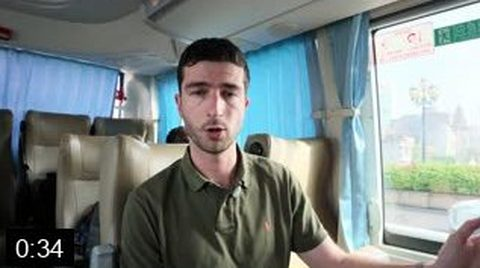
Joshua: 'WeChats like crazy'DJI_20261013091746_0022_D · A · 0:22-0:45Phone across the tableB035C082_261014OQ · A · 0:02-0:06The selfieB035C096_261014YF · A · 0:00-0:04
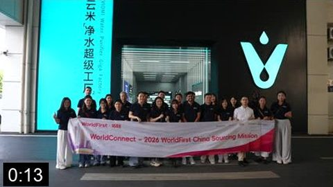
Group photo at the gateB033C129_261012DX · A · 0:09-0:17Lincoln closes itB034C206_261013GN · A · 0:33-0:59
Footage
ConfirmedJohn C107 A (5:02 and 5:11), WeChat swap C089 A, Joshua bus recap DJI_0022 A (0:44), dim sum phone B035C082 A, selfie B035C096 A, gate photo B033C129 A, Lincoln C206 A (1:32 to 1:41). No dinner footage exists; the dim sum stands in.
VO5 as recorded. It asks the question again, which is what the chapter needs.
You hear
Recorded · VO5 4:07 to 4:19VO5: 'After the workshop we set up a room with a view and asked six people on the trip the same question: what did you learn here that you could not have learned back home.'
You see
The stage being lit, the skyline through the glass, Joshua's single with the question sheet.
On screen
Chapter card: What they would tell you.
Storyboard
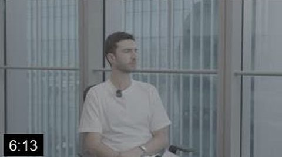
Joshua with the question sheetC7380 · B · 0:24-11:20
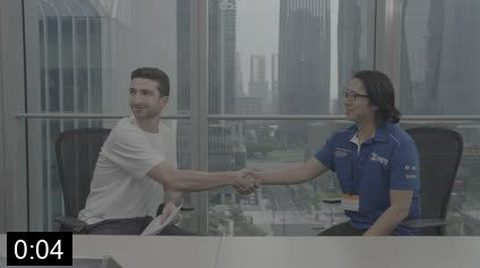
The stageC8192 · B · 0:01-0:06
Chapter card · to build
Footage
ConfirmedVO5 clean. Joshua single C7380 B, stage wrap C8192 B. Everything on the stage is flat log.
VO5 · C7380 · C8192
11
The verdict
80 s
Five voices, sceptic first, newcomer last. Two-shot for the answer, guest single for the reaction.
You hear
Harold: 'We come two or three times a year, but this tour has really, really opened my eyes.' Han: 'You can't learn this back home... a few years ago, I should have done this.' Brian: 'Before the trip I did not know about WorldFirst... the reason I would use it after this trip is the people on the ground that I've met, that I trust. Compared to my card, I know no one there. I'm one of the numbers.' Jimmy: 'It's a no-brainer, really.' Miley: 'Especially the first-time buyer, you have to come. You have to find out.'
You see
The two-shots, cut to the guest singles on the key words.
On screen
Lower thirds: name, company, country.
Storyboard
HaroldC8186 · B · 0:19-3:37Harold, singleqiang-0001 · B · 2:08-2:22HanC8188 · A · 6:19-9:53
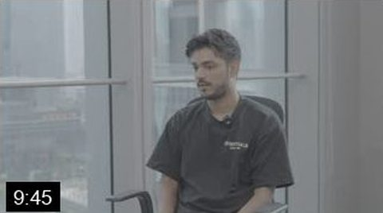
Han, singleqiang-0003 · A · 9:09-9:41BrianC8187 · A · 3:53-5:59Brian, singleqiang-0002 · A · 5:40-5:50JimmyC8190 · B · 8:27-11:14MileyC8193 · B · 5:53-6:49Miley, singleqiang-0007 · B · 6:43-7:23
Footage
ConfirmedHarold C8186 B / qiang-0001 B. Han C8188 A / qiang-0003 A. Brian C8187 A / qiang-0002 A. Jimmy C8190 B. Miley C8193 B (dark) / qiang-0007 B. Grade needed on all.
The wider world after the verdict. No new argument.
You hear
Joshua in the lobby: 'We're at the Canton Fair and this place is absolutely massive.'
You see
The group walking to the glass entrance, the crowd pouring through the gates, the delegation with the banner, the booth sign.
On screen
None.
Storyboard
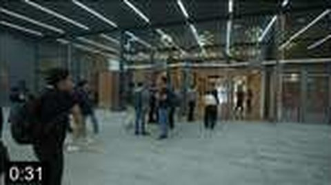
To the glass entranceC6771 · A · 0:25-0:37Joshua: 'absolutely massive'C6773 · A · 0:01-0:25Through the gatesC6919 · A · 0:08-0:29Under the LEDC6865 · A · 0:01-0:13The bannerC6778 · A · 0:01-0:12The booth signC6861 · A · 0:01-0:10
Footage
ConfirmedEntrance C6771 A, Joshua lobby C6773 A, gates C6919 A (blown), crowd C6865 A, banner C6778 A, booth sign C6861 A.
C6771 · C6773 · C6919 · C6865 · C6778 · C6861
13
Leaving
30 s
VO6 as recorded, over the coach at dusk. The only place the host answers the question himself, after the clients have.
You hear
Recorded · VO6 4:19 to 4:46VO6: 'Three days ago I got on a bus with fourteen people I had never met. I have now seen where the stuff in my kitchen gets made, I know what to ask before I order, and I know how the people who make it want to be paid. If I had come on my own I would not have done five per cent of this. The next China Sourcing Trip is in spring, around the next Canton Fair. If you have been putting this off, stop. Register your interest at the link below.'
You see
To build · end cardDelegates boarding at dusk, the coach side 'Source from China. Pay with WorldFirst.', the red coach reversing out across the lot with the skyline lit. Then the end card.
On screen
End card: China Sourcing Trip · Spring 2027 · Register your interest. Factory names after approval. WorldFirst logo as file.
Storyboard
Boarding at duskC6953 · A · 0:11-0:21'Source from China. Pay with WorldFirst.'C6945 · A · 0:10-0:19The coach leavesC6959 · A · 0:01-0:12
End card · to build
Footage
ConfirmedVO6 clean. Boarding at dusk C6953 A (0:11 to 0:21), coach side C6945 A (0:10 to 0:19), coach leaving C6959 A (0:01 to 0:12). End card to build.